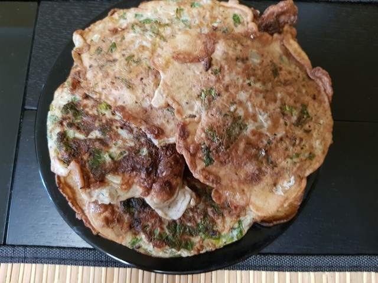
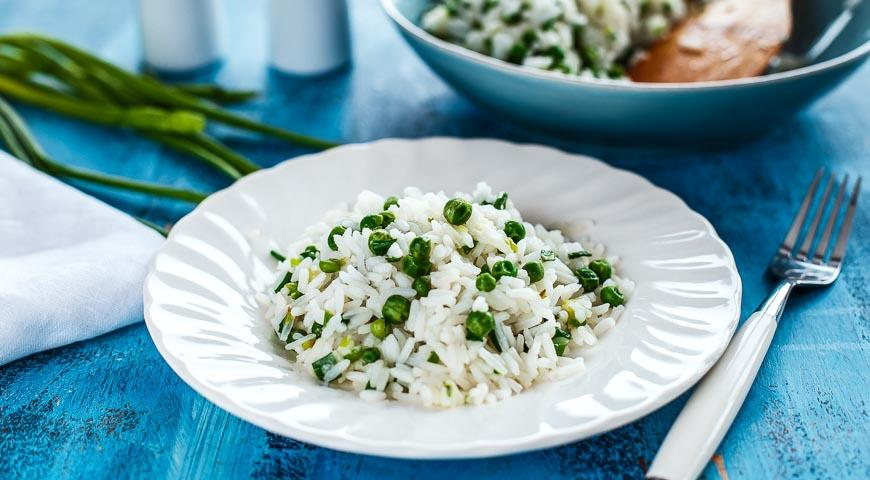
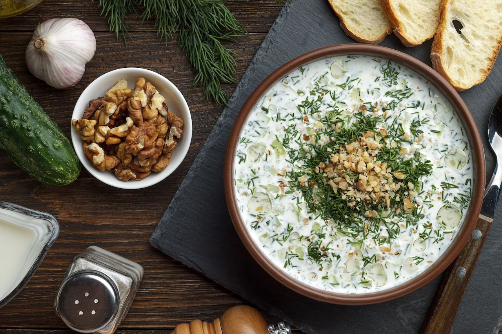

____
Традиционная еда
АДЖИ — по вкусу, если не знать из чего приготовлены, очень трудно определить из чего они сделаны. Хороши как холодными, так и тeплыми. И делать очень быстро.

ЯБРА — это арабские голубцы в виноградных листьях. Очень вкусное блюдо. Правда, готовится оно долго.
РИС С ЗЕЛЕНЫМ ГОРОШКОМ — Очень распространенное в Сирии блюдо. Готовят как на праздничный стол, так и повседневно. Рис всегда получается белый, рассыпчатый. Отличный гарнир к курице или мясу. К рису подают густой йогурт в пиалах.

ОГУРЦЫ В ЙОГУРТЕ — Вкусное и легкое блюдо из арабской кухни. Очень просто и быстро готовится. Хорошо сочетается с блюдами из риса, с зеленой фасолью.

____